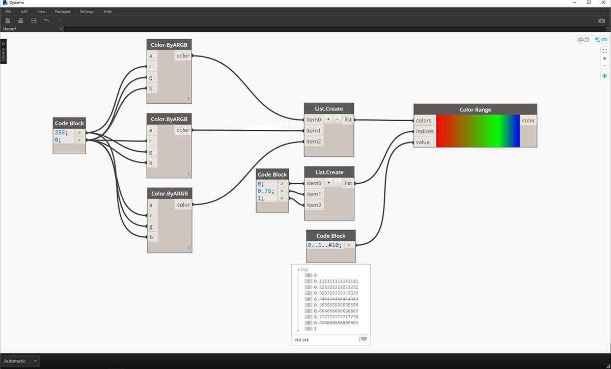
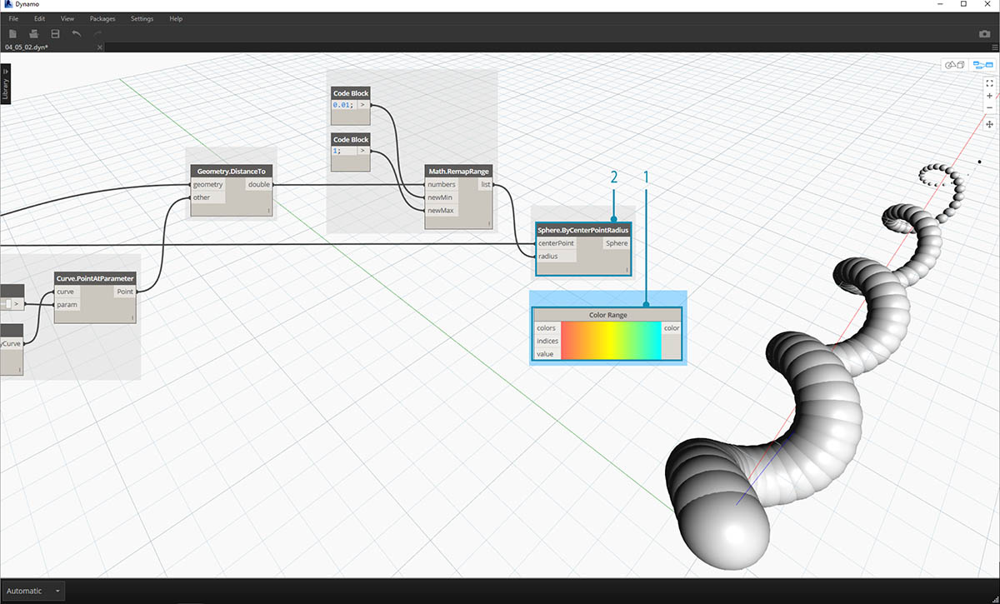
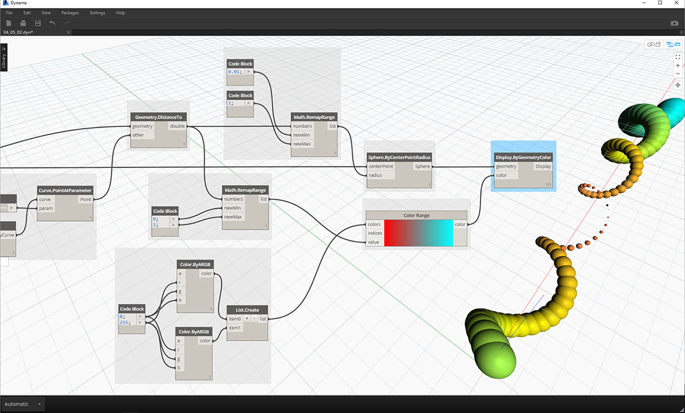
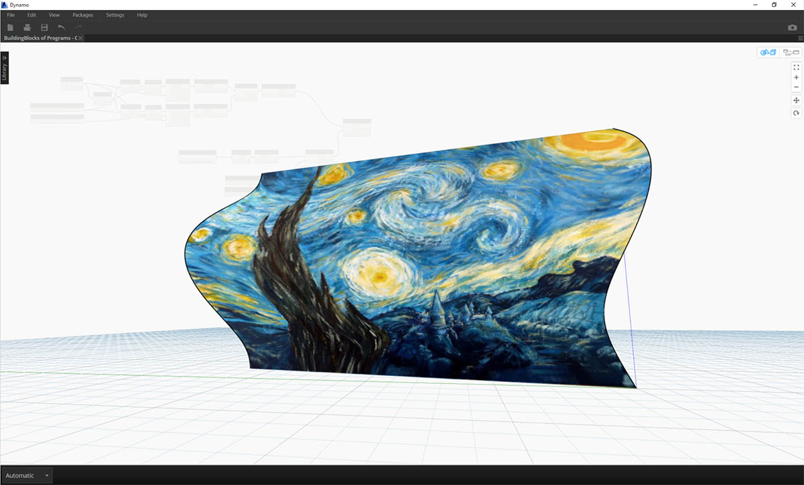

色彩
對於營造引人注目的視覺效果以及彩現視覺程式輸出的差異而言，顏色是很棒的資料類型。使用抽象資料及不同的數字時，有時很難查看變更的項目與變更程度。顏色在這裡大有用武之地。
建立顏色
在 Dynamo 中使用 ARGB 輸入建立顏色。這對應於 Alpha、紅色、綠色與藍色通道。Alpha 代表顏色的透明度，而其他三項用作主要顏色以協同產生顏色的整個光譜。
| 圖示 | 名稱 | 語法 | 輸入 | 輸出 |
|---|---|---|---|---|
| ARGB 顏色 | Color.ByARGB | A、R、G、B | 顏色 |
查詢顏色值
以下表格中的顏色會查詢用於定義顏色的性質：Alpha、紅色、綠色與藍色。請注意，Color.Components 節點會提供所有四項作為不同輸出，因此該節點更適合查詢顏色的性質。
| 圖示 | 名稱 | 語法 | 輸入 | 輸出 |
|---|---|---|---|---|
| Alpha | Color.Alpha | 顏色 | A | |
| 紅 | Color.Red | 顏色 | R | |
| 綠 | Color.Green | 顏色 | G | |
| 藍色 | Color.Blue | 顏色 | B | |
| 元件 | Color.Components | 顏色 | A、R、G、B |
以下表格中的顏色對應於 HSB 顏色空間。將顏色分為色相、飽和度與亮度可以更直觀地解譯顏色：顏色應該是怎樣的？顏色是什麼色彩？顏色的明暗程度應該是怎樣的？這是分別劃分的色相、飽和度與亮度。
| 圖示 | 查詢名稱 | 語法 | 輸入 | 輸出 |
|---|---|---|---|---|
| 色相 | Color.Hue | 顏色 | 色相 | |
| 飽和度 | Color.Saturation | 顏色 | 飽和度 | |
| 亮度 | Color.Brightness | 顏色 | 亮度 |
顏色範圍
顏色範圍類似於 4.2 節中的 Remap Range 節點：可將數字清單重新對映至其他範圍。但它並非對映至數字範圍，而是根據介於 0 至 1 的輸入數字對映至顏色漸層。
目前節點非常有效，但在首次使用時要面面俱到可能會有些困難。熟悉顏色漸層的最佳方式是以互動方式對其進行測試。接下來我們進行快速練習，以檢閱如何設置輸出顏色對應於數字的漸層。

- 定義三種顏色：使用代碼區塊節點，透過插入 0 與 255 的適當組合來定義紅色、綠色與藍色。
- 建立清單：將三種顏色合併到一個清單中。
- 定義索引：建立清單以定義每種顏色的掣點位置 (從 0 至 1)。請注意值 0.75 為綠色。這會在顏色範圍滑棒上，將綠色置於水平漸層長度的 3/4 處。
- Code Block：輸入值 (介於 0 至 1 之間) 可以轉換為顏色。
顏色預覽
使用 Display.ByGeometry 節點可以在 Dynamo 視埠中查看顏色幾何圖形。這有助於區分不同類型的幾何圖形、展示參數式概念，或定義模擬的分析圖例。輸入很簡單：幾何圖形與顏色。為了建立與以上影像類似的漸層，將顏色輸入連接至 color range 節點。

顏色練習
下載此練習隨附的範例檔案 (按一下右鍵，然後按一下「連結另存為...」)：建置程式區塊 - Color.dyn。附錄中提供範例檔案的完整清單。
本練習的內容主要是以參數式方法控制顏色及幾何圖形。幾何圖形是基本螺旋，在以下使用 Code Block (3.2.3) 進行定義。這是快速輕鬆的參數式函數建立方式，由於我們的焦點是顏色 (而不是幾何圖形)，因此我們使用代碼區塊高效建立螺旋線，而不贅述圖元區。隨著手冊改用更先進的材料，我們將更頻繁地使用代碼區塊。

- Code Block：定義包含上述公式的兩個代碼區塊。這是快速建立螺旋線的參數式方法。
- Point.ByCoordinates：將代碼區塊的三項輸出插入至節點的座標。
現在我們可以看到建立螺旋線的一系列點。下一步是建立通過這些點的曲線，以便能看到螺旋。

- PolyCurve.ByPoints：將 Point.ByCoordinates 輸出連接至節點的 points 輸入。現在將產生螺旋曲線。
- Curve.PointAtParameter：將 PolyCurve.ByPoints 輸出連接至 curve 輸入。此步驟的目的是建立沿曲線滑動的參數式牽引點。由於曲線透過參數對點進行演算，因此我們需要輸入 0 與 1 之間的 param 值。
- Number Slider：加入至圖元區後，將 min 值變更為 0.0，max 值變更為 1.0，step 值變更為 0.01。將滑棒輸出插入至 Curve.PointAtParameter 的 param 輸入。現在，我們將看到沿螺旋線的長度由滑棒的百分比表示的點 (0 表示起點，1 表示終點)。
建立參考點後，現在我們比較從參考點到螺旋原始定義點的距離。此距離值將驅動幾何圖形與顏色。

- Geometry.DistanceTo：將 Curve.PointAtParameter 輸出連接至輸入。將 Point.ByCoordinates 連接至*幾何圖形輸入。
- Watch：產生的結果將顯示從每個螺旋點至曲線上參考點之距離的清單。
下一步驟是使用從螺旋點至參考點之距離的清單來驅動參數。我們將使用這些距離值來定義曲線上一系列圓球的半徑。若要讓圓球保持合適的大小，我們需要重新對映距離值。

- Math.RemapRange：將 Geometry.DistanceTo 輸出連接至數字輸入。
- Code Block：將值為 0.01 的代碼區塊連接至 newMin 輸入，將值為 1 的代碼區塊連接至 newMax 輸入。
- Watch：將 Math.RemapRange 輸出連接至一個節點，將 Geometry.DistanceTo 輸出連接至另一個節點。比較結果。
此步驟已將距離清單重新對映至較小的範圍。我們可以採用合適的任何方式編輯 newMin 與 newMax 值。這些值將重新對映，並在整個範圍內具有相同的分配比率。

- Sphere.ByCenterPointRadius：將 Math.RemapRange 輸出連接至半徑輸入，將原始 Point.ByCoordinates 輸出連接至中心點輸入。

- Number Slider：變更數字滑棒的值，查看圓球大小更新。現在我們建立了參數式樣板。
圓球的大小展示出由曲線上的參考點定義的參數式陣列。接下來我們應用相同的概念，使用圓球半徑來驅動其顏色。

- Color Range：加入圖元區頂部。懸停在 value 輸入上時，我們會注意到要求的數字介於 0 與 1 之間。我們需要重新對映 Geometry.DistanceTo 輸出中的數字，以便其與此範圍相容。
- Sphere.ByCenterPointRadius：我們暫時停用此節點上的預覽 (按一下右鍵 >「預覽」)

- Math.RemapRange：此程序似乎應該很熟悉。將 Geometry.DistanceTo 輸出連接至數字輸入。
- Code Block：與之前的步驟類似，為 newMin 輸入建立值 0，為 newMax 輸入建立值 1。請注意，在此案例中，我們可以從一個代碼區塊定義兩個輸出。
- Color Range：將 Math.RemapRange 輸出連接至 value 輸入。

- Color.ByARGB：這是我們為了建立兩種顏色將執行的作業。雖然此程序可能貌似有些難，但是它與其他軟體中的 RGB 顏色相同，我們只是剛剛使用視覺程式設計來執行此作業而已。
- Code Block：建立 0 與 255 兩個值。將兩個輸出插入至與以上影像相同的兩個 Color.ByARGB 輸入 (或建立您最愛的兩種顏色)。
- Color Range：*colors* 輸入要求提供顏色清單。我們需要使用上一步驟中建立的兩種顏色建立此清單。
- List.Create：將兩種顏色合併到一個清單中。將輸出插入至 Color Range 的 colors 輸入。

- Display.ByGeometryColor：將 Sphere.ByCenterPointRadius 連接至 geometry 輸入，將 Color Range 連接至 color 輸入。現在，我們已在整個曲線範圍內建立平滑的漸層。

如果我們變更之前定義中 number slider 的值，顏色與大小就會更新。在此案例中，顏色與半徑大小直接相關：我們現在已在兩個參數之間建立視覺連結！
曲面上的顏色
透過 Display.BySurfaceColors 節點，我們可以使用顏色對映整個曲面上的資料！此功能帶來某些振奮人心的可能性，可以對透過離散分析 (例如日光、能源及鄰近) 取得的資料進行視覺化。在 Dynamo 中將顏色套用至曲面類似於在其他 CAD 環境中將材質套用至材料。接下來在以下簡短練習中演示如何使用此工具。

曲面上的顏色練習
下載此練習隨附的範例檔案 (按一下右鍵，然後按一下「連結另存為...」)：建置程式區塊 - ColorOnSurface.zip。附錄中提供範例檔案的完整清單。

首先，我們需要建立 (或參考) 將用作 Display.BySurfaceColors 節點輸入的曲面。在此範例中，我們將在正弦及餘弦曲線之間進行斷面混成。
- 此節點群組將沿 Z 軸建立點，然後根據正弦及餘弦函數將其取代。然後，使用兩點清單產生 NURBS 曲線。
- Surface.ByLoft：在清單的 NURBS 曲線之間產生內插曲面。

- 檔案路徑：選取將針對下游像素資料進行取樣的影像檔案
- 使用 File.FromPath 將檔案路徑轉換為檔案，然後傳送至 Image.ReadFromFile以輸出供取樣的影像
- Image.Pixels：輸入影像，並提供沿影像的 x 和 y 標註將使用的取樣值。
- 滑棒：提供 Image.Pixels 的取樣值
- Display.BySurfaceColors：分別沿 x 與 y 軸在整個曲面內對映一系列顏色值

取樣解析度為 400x300 之輸出曲面的特寫預覽